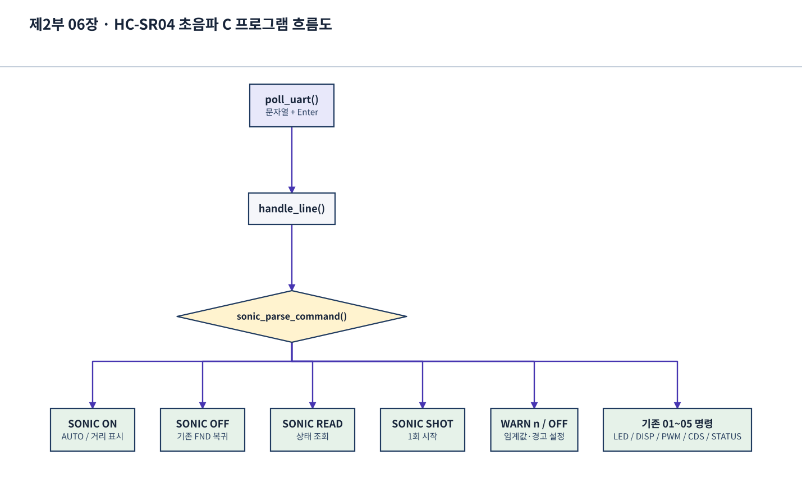

00이 장의 목표
AXI4-Lite 사용자 IP로 초음파 왕복 시간을 측정하고, UART 문자열 명령·FND 네 자리 표시·LED2 근접/오류 경고로 연결한다. 실제 실습은 10장 교재 제작 후 진행.
- Basys3 XC7A35T
- MicroBlaze V
- Vivado/Vitis 2024.2
- SONIC / WARN
- RTL + AXI
0101장부터 이어지는 06장 실습 범위
CPU는 문자열 명령과 표시 모드를 처리한다. hc_sr04_core는 12μs TRIG 발생·Echo HIGH 폭 측정을 수행한다. 사용자 AXI4-Lite(에이엑스아이 포 라이트, 저속 제어 레지스터 버스) IP는 설정과 결과를 전달한다.

과제 경계: LED0은 01장, FND는 02장, 방향 버튼/IRQ는 03장, PWM LED1은 04장, CdS 자동 조명은 05장을 이어받는다. 새 출력 LED2와 초음파 신호만 추가한다.
02UART 문자열 명령과 기대 동작
| 명령 | 동작 |
|---|---|
SONIC ON | TRIG를 반복 발생시키고 FND를 거리(cm) 보기로 전환. 새 측정 완료 전 FND 소등 |
SONIC OFF | 연속 측정 중지. 진행 중인 1회 측정은 마무리될 수 있음. 기존 VALUE/EVENTS 표시 복귀 |
SONIC SHOT | AUTO OFF일 때 1회 측정 요청. 이미 BUSY면 거부 |
SONIC READ | 최근 완료한 거리와 Echo 폭, 유효/타임아웃/범위오류 조회. 새 측정 시작 아님 |
WARN 20 | 경고 임계거리 20cm 설정 및 LED2 경고 허용 |
WARN OFF | LED2 경고 출력만 비활성화. 내부 UNSAFE(위험) 신호는 유지 |
STATUS | 01~05장 상태와 SONIC 관련 상태를 함께 출력 |
USB-UART 터미널 115200 baud, 8N1, 줄 끝 CR 또는 LF. 대소문자·공백을 구별하며 다른 문자열은 ERROR로 처리한다.
03거리 계산·초음파 타이밍
HC-SR04는 10μs 이상의 TRIG 신호 후 약 40kHz 초음파 8주기를 발사한다. 물체에서 반사된 신호의 왕복 시간에 비례하여 ECHO가 HIGH로 유지된다. 여기서는 12μs TRIG를 사용한다.
ECHO_HIGH 5800us → 거리 5800 / 58 ≈ 100cm
ECHO_HIGH 580us → 거리 580 / 58 ≈ 10cm
거리 유효 범위: 2~400cm
TIMEOUT: 약 38ms 동안 시작/종료 이벤트가 없으면 오류 처리분모 58은 상온 음속을 이용한 실용 근사값이다. 온도·물체 표면·각도에 따라 측정 오차가 발생한다. 1μs Tick(틱, 시간 눈금) 카운터가 100MHz 클록의 100주기에 해당하려면 실제 AXI 클록이 100MHz인지 확인해야 한다. 측정 완료 후 약 60ms Cooldown(쿨다운, 재측정 대기)으로 연속 트리거를 제한한다.
CLK_HZ=100000000, TIMEOUT_US=38000, COOLDOWN_US=60000. 테스트벤치는 빠른 확인을 위해 매개변수를 축소할 수 있다.045V 센서와 Basys3 3.3V 입력 보호
| 신호 | 연결 | 특이사항 |
|---|---|---|
| 센서 VCC | 외부 안정화된 +5V | Basys3 Pmod VCC 3.3V 단자와 혼동 금지 |
| 센서 GND | 외부 5V GND ↔ Basys3 GND 공통 | 전원 인가 전 공통 접지 확인 |
| TRIG | Basys3 JA2 → L2 → 센서 TRIG | FPGA 3.3V HIGH 인식 여부 모듈별 확인, 불확실하면 변환기 사용 |
| ECHO | 센서 ECHO → 5V/3.3V 레벨 변환 → JA3/J2 | FPGA 핀에 5V 직접 입력 금지 |
| CdS 기존 | JA1 → J1 | 05장 센서와 핀 중복 없음 |
ECHO(5V) ──[5.1kΩ]──●── JA3(J2) 입력
│
[6.8kΩ]
│
GND
이론상 V_JA3 = 5 × 6.8 / (5.1 + 6.8) ≈ 2.86V05FND 자리별 의미·우선순위
| 자리 | 4자리 거리 예: 0123 | 뜻 |
|---|---|---|
| AN3 / D3 | 0 | 천의 자리. 2~400cm에서는 0 |
| AN2 / D2 | 1 | 백의 자리 |
| AN1 / D1 | 2 | 십의 자리 |
| AN0 / D0 | 3 | 일의 자리 |
SONIC ON에서는 D3D2D1D0 전체를 거리(cm)의 10진수 네 자리로 표시한다. 이전 FND 앱의 VALUE/EVENTS는 내부에서 계속 갱신하되 표시 우선권은 거리 모드에 있다. SONIC OFF에서는 현재 VALUE/EVENTS 모드로 복귀한다.
| 상태 | FND | LED2 |
|---|---|---|
| 정상 50cm, WARN 20 | 0050 | OFF |
| 정상 10cm, WARN 20 | 0010 | ON |
| 아직 첫 측정 완료 전 | 소등 | 기본 경고 허용 시 ON |
| 측정 TIMEOUT/RANGE_ERROR | 소등 | 기본 경고 허용 시 ON |
| WARN OFF | 해당 거리 또는 소등 | OFF (UNSAFE 비트는 별도 유지) |
FND의 02장 IP는 BCD(비시디, 4비트 10진수 자리 표현)와 전체 ON/OFF만 처리한다. ----와 같은 문자를 표시하려면 기존 FND IP 확장이 필요하므로 임의로 구현된 것처럼 쓰지 않는다.
06사용자 AXI IP 주소·비트 맵
| 오프셋 | 이름 | 접근 | 동작 |
|---|---|---|---|
| 0x00 | CTRL | RW | bit0 AUTO, bit1 START(쓰기 1회 펄스), bit2 WARN_EN; 초기 0x4 |
| 0x04 | STATUS | RO | bit0 BUSY, 1 VALID, 2 TIMEOUT, 3 RANGE_ERROR, 4 ALERT, 5 UNSAFE, 6 AUTO, 7 WARN_EN, 8 READY |
| 0x08 | DIST_CM | RO | 최근 완료한 유효 거리 정수(cm), 오류 시 0 |
| 0x0C | ECHO_US | RO | 최근 완료한 Echo HIGH 폭(μs), 오류 시 정의에 따라 0 또는 측정값 |
| 0x10 | WARN_CM | RW | 근접 경고 임계거리, 1~400cm, 기본 20 |
| 0x14 | SEQ | RO | 측정 완료마다 1 증가, 32비트 순환 |
| 0x18 | IP_ID | RO | 0x00060001 |
| 0x1C | CLK_HZ | RO | IP에 설정된 클록 주파수 |
실제 IP 베이스 주소는 새로운 Vivado Address Editor(어드레스 에디터, 주소 할당 화면) 및 XSA 기반 Vitis xparameters.h에서 조회한다. 기존 다섯 IP와 중복되지 않아야 한다. 교재의 모의 주소는 보드용 확정 주소가 아니다.
LED2 sonic_alert_o는 WARN_EN일 때 sonic_unsafe_o를 표시한다. UNSAFE는 유효하지 않은 측정 또는 현재 거리 ≤ 임계값이면 1이다. 07장 모터 보호 신호 설계 시 WARN OFF로 보호를 해제하는 혼동을 방지한다.
07문자열 처리 및 표시 갱신 흐름

UART 한 줄이 완성되면 handle_line()에서 sonic_parse_command()를 먼저 호출하고, 해당 명령이 아니면 기존 CDS/PWM/LED/DISP/STATUS 분기로 진행한다. 메인 반복문에서 service_sonic_display()가 SEQ 변경을 관찰해 새 거리값을 FND에 반영한다.
동기화 대상 Echo 핀은 외부 비동기 입력이므로 Core에서 2FF(2단 플립플롭, 메타안정성 위험 감소)를 사용한다. 인터럽트가 아니라 기존 C의 주기적 폴링으로 거리 상태를 표시하므로, 03장 버튼 IRQ 흐름은 변경하지 않는다.
0805장 기준 프로젝트 확인
soc_ip_design_05를 수행 완료한 뒤 XPR·BD·Top·FND·버튼 IRQ·CdS·PWM 연결을 확인한다. 05장까지 실제 프로젝트가 아직 없다면 06장 구현을 시작하지 않는다.
기존 01~05장 프로젝트과 폴더가 보존되고 05장 합성 결과와 실제 기능을 확인.
설계 확인: 제작된 교재 파일은 Vivado 프로젝트 자체가 아니다.
0906장 독립 프로젝트 복제
Vivado → File → Project → Save As에서 새 프로젝트명 soc_ip_design_06, 목표 폴더 ~/soc/hw/soc_ip_design_06/로 저장한다. 소스 복사 설정을 확인한다.
soc_ip_design_06.xpr가 신규 폴더에 있고 기존 05장 Top·BD 파일을 읽는지 확인.
설계 확인: 05장 기준 프로젝트를 직접 수정하지 않는다.
10내장 FND·LED 및 외부 핀 예산 확인
Open Synthesized Design 또는 Sources/XDC에서 LED0, LED1, LED2, FND AN/SEG, JA1 사용 상태를 확인한다. LED2가 기존 GPIO led_tri_o[2]를 직접 구동하는지 기록한다.
05장 gpio_led[15:2] 구조를 확인하고 LED2가 06장에서는 단일 소유권으로 넘어갈 대상인지 파악.
설계 확인: GPIO[2] 연결은 출력 비트 재배선 대상이며, 기존 Timer LED15/UART LED14 기능은 목표이지만, 현재 05장 C 메인에 관련 핸들러가 없어 실제 회귀 불충족 가능성을 반드시 확인.
11HC-SR04 실물 배선·전압 확인
센서 VCC는 5V, GND는 Basys3와 공통, TRIG는 JA2(L2), ECHO는 레벨 변환 후 JA3(J2)로 준비한다. 전원을 넣기 전 ECHO 분압기와 FPGA 입력 접점을 검토한다.
센서 실물 라벨, 멀티미터 ECHO HIGH 측정, 모듈 TRIG 인식 확인. 변환 회로 준비 전 FPGA와 연결 금지.
설계 확인: 정확한 모듈 변종·전압이 확인되지 않으면 회로 접속을 보류.
12AXI 사용자 IP 생성
Tools → Create and Package New IP → Create a new AXI4 peripheral; 이름 p2_06_axi_sonic, AXI4-Lite 슬레이브 S00_AXI, Data Width 32, Address Width 6, 8개 레지스터를 목표로 지정한다.
독립 IP 디렉터리 soc_ip_design_06/ip_repo/에 IP Packager 대상이 생성되는지 확인.
설계 확인: 마법사 메뉴·파일명은 실제 2024.2 화면과 대조. 자동 생성 템플릿을 확인 없이 덮어쓰지 않는다.
13독립 HC-SR04 Core 적용
hc_sr04_core.v를 Packager에 포함한다. echo_meta/echo_sync 2FF, tick_us 분주, S_TRIG/S_WAIT/S_ECHO/S_COOL 상태를 확인한다.
TRIG 폭 12μs, Echo HIGH 5800μs이면 100cm, 580μs이면 10cm 계산이 기대된다.
설계 확인: 센서 프로토콜은 CPU 지연으로 타이밍을 만드는 것이 아니라 RTL에서 생성한다.
14AXI 슬레이브 전체 RTL 적용
S00_AXI.v로 실제 팩키지 파일을 대조·반영한다. AWVALID/WVALID 독립 수용, WSTRB·BREADY·RREADY 처리를 확인한다.
각 주소 0x00~0x1C 및 읽기 전용 레지스터 오류 응답이 일치해야 한다.
설계 확인: 실제 IP 마법사 주소 폭·포트 방향과 제공 RTL이 다르면 원인 분석 후 보완한다.
15AXI IP Top 및 File Groups 구성
p2_06_axi_sonic_v1_0.v를 지정하고 File Groups에 3개 RTL 파일이 Synthesis/Simulation 대상인지 확인한다. Review and Package → Re-Package IP.
sonic_echo_i, sonic_trig_o, sonic_alert_o, sonic_unsafe_o가 IP 포트에 나타난다.
설계 확인: 신규 Core 누락 시 RTL 시뮬레이션/합성 실패. 외부 신호는 모두 1-bit.
16Core 독립 RTL 테스트
를 Simulation Sources에 추가하여 12μs TRIG, 10·100cm, 범위 밖 Echo, 38ms Timeout 및 Stuck-HIGH 입력을 시험한다.
Icarus 예제는 tests/run_rtl_tests.sh. Vivado XSIM에서도 같은 파형 및 단언을 확인.
설계 확인: 테스트용 시간 파라미터는 축소할 수 있다.
17AXI 독립 테스트
에서 AW 먼저/W 먼저, WSTRB, BVALID/RVALID 대기, 읽기전용 레지스터, 레지스터 ID·근접 출력 검사.
BRESP/RRESP와 레지스터 읽기가 기대대로, R/B 응답이 READY까지 유지되는지 확인.
설계 확인: TB 단언이 있다고 해서 실제 시뮬레이터 확인이 완료된 것은 아니다.
18Block Design에 AXI IP 추가
Sources → soc11_integration.bd → Open Block Design. Add IP로 사용자 p2_06_axi_sonic을 배치하고 Run Connection Automation으로 S00_AXI를 MicroBlaze V AXI 마스터에 연결한다.
기존 01~05장 IP, AXI UART Lite, AXI Timer, AXI INTC, BRAM 경로를 보존하고 새 IP만 AXI에 추가한다.
설계 확인: 새 IP는 이번 장에서 인터럽트 신호를 별도로 추가하지 않는다.
19Clock/Reset 및 AXI 주소 설정
s00_axi_aclk와 s00_axi_aresetn이 기존 SoC의 동기 AXI 클록·리셋과 일치하는지 확인한다. Address Editor에서 신규 0x20 이상 주소 영역을 겹침 없이 배정한다.
설정된 IP BASEADDR/범위를 별도로 기록한다. CLK_HZ는 실제 s00_axi_aclk의 주파수로 맞춘다.
설계 확인: 중복 create_clock과 Critical Warning의 원인을 해소한다.
20센서·경고 포트를 BD 외부화
sonic_trig_o → 외부 출력 sonic_trig, sonic_echo_i → 외부 입력 sonic_echo, sonic_alert_o → 외부 출력 sonic_alert, sonic_unsafe_o → 외부 출력 sonic_unsafe. Validate Design을 실행한다.
BD 출력 포트 방향·이름과 IP/Top 코드가 일치하는지 확인.
설계 확인: 포트 이름을 실제 GUI에서 지정하기 전에 제공된 Top을 추가하지 않는다.
21Vivado 관리 Wrapper 재생성
Generate Output Products 이후 Create HDL Wrapper → Let Vivado manage wrapper를 사용한다. 자동 생성 soc11_integration_wrapper.v에서 신규 포트 선언을 확인한다.
생성 Wrapper에 06장 외부 포트가 4개 존재하고 기존 `clk`, `btnC`, UART, GPIO, FND, 버튼, CdS, PWM 연결이 남아 있다.
설계 확인: 자동 Wrapper 수동 편집·임의 이름 변경 금지.
22사용자 Top 적용·LED2 분리
basys3_soc11_top_p2_06.v를 실제 Wrapper와 대조한 후 반영한다. 최상위 모듈명은 basys3_soc11_top으로 유지하고 Set as Top을 실행한다.
assign led = {gpio_led[15:3], sonic_alert, light_led1, p2_led0};에서 LED2만 SONIC 경고 출력이 담당한다.
설계 확인: Top은 Wire/인스턴스/비트 연결만 수행. 비교·연산·우선순위는 RTL/Core 또는 C에 배치.
23XDC 신규 핀 설정
sonic_jumper_only.xdc의 JA2 L2, JA3 J2만 기존 XDC에 추가한다. 동일 FPGA 핀의 중복 Constraint가 없는지 확인한다.
JA1 J1 CdS와 겹치지 않고 LED2 U19·BTNC U18·UART 포트·FND 제약이 유지된다.
설계 확인: 100MHz Clock 제약 중복을 추가하지 않는다.
24Vivado 구현·타이밍 확인
Run Synthesis → Run Implementation → Generate Bitstream. Report Timing Summary의 Setup/Hold WNS/TNS, Report DRC, Clock 및 I/O Standard 경고를 확인한다.
프로젝트 경로와 생성된 결과가 soc_ip_design_06 하위인지 확인. 사용된 LUT/FF/BRAM 추정값을 기록.
설계 확인: Static Timing 통과와 센서 전기적 안전, UART/버튼 실물 성공은 각각 별도 판정한다.
25XSA Export·Vitis Platform 준비
File → Export → Export Hardware에서 새 XSA를 생성한다. Vitis에서 신규 Platform/Application을 별도 폴더에 구성하고 06장 XSA와 BSP를 일치시킨다.
새 IP가 xparameters.h에서 검색 가능하고 주소/인터럽트 ID와 실제 BD가 일치해야 한다.
설계 확인: 구 01~05장 ELF를 06장 XSA용으로 재사용했다고 가정하지 않는다.
26C 전체 소스 및 매크로 설정
main_p2_06.c와 기존 p2_03_logic.c, p2_04_pwm_logic.c, p2_05_cds_logic.c, 신규 p2_06_sonic_logic.c 및 헤더를 Application Sources에 등록한다. 신규 06장 BASEADDR을 실제 값으로 지정한다.
SONIC_EXPECTED_ID=0x00060001, BUTTON IRQ SDT/Classic 인자를 현재 BSP로 확인한다.
설계 확인: 매크로 0xFFFFFFFFU는 주소 미확인을 막는 의도적 컴파일 차단값이다.
27UART 실습 · 측정·경고
터미널 115200 8N1에서 STATUS → SONIC ON → 물체 50cm → SONIC READ → 10cm → WARN 20 → SONIC READ → SONIC OFF 순서로 실행한다.
50cm에서 FND 0050/LED2 OFF, 10cm에서 FND 0010/LED2 ON이 기대된다. 센서 미연결·Timeout에서 FND blank + STATUS 오류.
설계 확인: 물체 크기, 각도, 센서 방해물, 측정 환경으로 실제 cm 값은 변동된다. 명령은 Enter 전송.
28단발 측정·오류·재현
SONIC OFF → SONIC SHOT → 완료 뒤 SONIC READ. 이어 WARN OFF를 수행하고, STATUS의 UNSAFE가 경고 출력과 별도로 유지되는지 확인한다.
SONIC SHOT 중복 요청 시 BUSY 출력, WARN 0/401, SONIC Foo, 문자열 길이 초과는 오류로 처리.
설계 확인: LED2 표시가 꺼져도 SAFE 신호는 달라지지 않는다. 07장 모터 안전 요구와 분리.
2901~05장 회귀시험·기록
LED ON/OFF, DISP 0050, 방향 버튼 SHORT/LONG/IRQ, PWM 0/50/100, AUTO ON/OFF, CDS READ, UART LED14, Timer LED15를 시험한다(현재 05장 C에는 구현이 없어 필수 보강 대상).
신규 06장뿐 아니라 원래 01~05장 IP·핀·IRQ·FND 모드가 유지되어야 한다. LED14/UART 표시와 LED15/Timer 핸들러는 09장에서 추가한다.
30증상별 오류 분석
| 현상 | 원인 후보 | 점검/대응 |
|---|---|---|
| ECHO 5V 입력 | JA3 입력 손상 위험 | 연결 금지. 레벨 변환·전압 실측 후 접속 |
| TRIG=HIGH인데 ECHO 없음 | 3.3V HIGH 인식 실패, GND, 부품, 타이밍 | TRIG 펄스 계측, 모듈 규격 확인·레벨시프터 |
| SONIC READ에서 TIMEOUT=1 | ECHO 미도착/지속 HIGH, 측정 대상 없음 | JA3, 분압기, 센서 전원, 환경 확인 |
| 거리 0·FND blank | VALID=0 또는 새 측정 전 | SEQ, RANGE_ERROR, TIMEOUT 비교 |
| 근접 아닌데 LED2 ON | VALID=0/전원 직후 FAIL-SAFE 경고 | STATUS의 UNSAFE, VALID, WARN_CM 확인 |
| WARN OFF 시 모터 보호까지 해제 | 경고 LED 정책과 안전 정지 신호 혼동 | sonic_unsafe_o는 WARN_EN과 무관한 독립 신호 |
| FND 0050 안 나옴 | BCD 변환과 02장 FND Active-Low/자리 배치 | REG0/REG1, FND_AN/SEG 확인 |
| AXI IP 포트 없음 | Packager File Groups/BD 외부화 미완료 | IP 업데이트, Validate Design, Wrapper 생성 |
| C 컴파일 #error | BSP의 신규 AXI 주소·IRQ ID 누락 | Address Editor → XSA → xparameters 확인 |
| UART/버튼 회귀 실패 | 기존 파일 참조, 기존 IRQ/Timer 연결 변경 | 05장 복제와 비교, 변경 위치만 복구 |
| Clock 경고/Negative Slack | 기존 클록 제약 충돌·경로 지연 | report_clocks, Timing Summary, constraints 확인 |
31소스·해설 자료
기술 참고: HC-SR04 모듈 데이터시트, Digilent Basys3 Reference Manual, Digilent Basys3 Master XDC. 실제 모듈 제조사와 Vivado 생성 RTL은 추후 대조해야 한다.
32실습 파일
`timescale 1ns/1ps
// P2-06 HC-SR04 reusable timing core; no board pins or AXI dependency.
// (추가) 2FF Echo synchronizer, microsecond tick, bounded waits, cooldown.
// 100 MHz AXI clock -> 100 clocks / 1 us; 12 us TRIG, >=60 ms cooldown.
// Result is the last COMPLETED reading. valid_o and fault flags persist.
module hc_sr04_core #(
parameter integer CLK_HZ = 100000000,
parameter integer TRIG_US = 12,
parameter integer TIMEOUT_US = 38000,
parameter integer COOLDOWN_US = 60000
)(
input wire clk, input wire resetn,
input wire echo_i, input wire start_i,
output reg trig_o, output wire ready_o, output wire busy_o,
output reg done_pulse_o,
output reg [15:0] distance_cm_o,
output reg [31:0] echo_us_o,
output reg valid_o, output reg timeout_o, output reg out_range_o
);
localparam integer TICK_CYCLES = CLK_HZ / 1000000;
localparam [2:0] S_IDLE=3'd0, S_TRIG=3'd1,
S_WAIT=3'd2, S_ECHO=3'd3, S_COOL=3'd4;
reg [2:0] state;
reg [31:0] div_count, us_count, high_us;
reg echo_meta, echo_sync, echo_prev;
wire tick_us = (div_count == TICK_CYCLES-1);
wire echo_rise = echo_sync && !echo_prev;
reg echo_rise_pending; // Catch sub-us rising edges until the next us tick.
assign ready_o = (state == S_IDLE);
assign busy_o = !ready_o;
// (추가) FPGA input can be asynchronous. Metastability cannot be
// eliminated absolutely; this 2FF path lowers the risk.
always @(posedge clk) begin
if (!resetn) begin
echo_meta <= 1'b0;
echo_sync <= 1'b0;
echo_prev <= 1'b0;
end else begin
echo_meta <= echo_i;
echo_sync <= echo_meta;
echo_prev <= echo_sync;
end
end
always @(posedge clk) begin
if (!resetn || state != S_WAIT) echo_rise_pending <= 1'b0;
else if (echo_rise) echo_rise_pending <= 1'b1;
else if (tick_us) echo_rise_pending <= 1'b0;
end
always @(posedge clk) begin
if (!resetn) begin
div_count <= 32'd0;
state <= S_IDLE;
us_count <= 32'd0;
high_us <= 32'd0;
trig_o <= 1'b0;
done_pulse_o <= 1'b0;
distance_cm_o <= 16'd0;
echo_us_o <= 32'd0;
valid_o <= 1'b0;
timeout_o <= 1'b0;
out_range_o <= 1'b0;
end else begin
done_pulse_o <= 1'b0;
if (tick_us) div_count <= 32'd0;
else div_count <= div_count + 32'd1;
case (state)
S_IDLE: begin
if (start_i) begin
trig_o <= 1'b1;
us_count <= 32'd0;
high_us <= 32'd0;
state <= S_TRIG;
end
end
S_TRIG: if (tick_us) begin
if (us_count + 32'd1 >= TRIG_US) begin
trig_o <= 1'b0;
us_count <= 32'd0;
state <= S_WAIT;
end else us_count <= us_count + 32'd1;
end
S_WAIT: if (tick_us) begin
if (echo_rise_pending || echo_rise) begin
// Edge latched at 100MHz to avoid missing it on us tick.
high_us <= 32'd1;
us_count <= 32'd0;
state <= S_ECHO;
end else if (us_count + 32'd1 >= TIMEOUT_US) begin
valid_o <= 1'b0;
timeout_o <= 1'b1;
out_range_o <= 1'b0;
distance_cm_o <= 16'd0;
echo_us_o <= 32'd0;
done_pulse_o <= 1'b1;
us_count <= 32'd0;
state <= S_COOL;
end else us_count <= us_count + 32'd1;
end
S_ECHO: if (tick_us) begin
if (!echo_sync) begin
echo_us_o <= high_us;
// D(cm) ~= EchoHigh(us)/58 at nominal room temperature.
if (high_us >= 32'd116 && high_us <= 32'd23200) begin
distance_cm_o <= (high_us + 32'd29) / 32'd58;
valid_o <= 1'b1;
timeout_o <= 1'b0;
out_range_o <= 1'b0;
end else begin
distance_cm_o <= 16'd0;
valid_o <= 1'b0;
timeout_o <= 1'b0;
out_range_o <= 1'b1;
end
done_pulse_o <= 1'b1;
us_count <= 32'd0;
state <= S_COOL;
end else if (high_us >= TIMEOUT_US) begin
echo_us_o <= high_us;
distance_cm_o <= 16'd0;
valid_o <= 1'b0;
timeout_o <= 1'b1;
out_range_o <= 1'b0;
done_pulse_o <= 1'b1;
us_count <= 32'd0;
state <= S_COOL;
end else high_us <= high_us + 32'd1;
end
S_COOL: if (tick_us) begin
if (us_count + 32'd1 >= COOLDOWN_US) begin
us_count <= 32'd0;
state <= S_IDLE;
end else us_count <= us_count + 32'd1;
end
default: state <= S_IDLE;
endcase
end
end
endmodule
`timescale 1ns/1ps
// P2-06 AXI4-Lite HC-SR04 user IP, 32-bit aligned addresses only.
// REG0 0x00 CONTROL: bit0 AUTO, bit1 START W1P, bit2 WARN_EN (reset 1)
// REG1 0x04 STATUS: bit0 BUSY,1 VALID,2 TIMEOUT,3 RANGE_ERROR,
// bit4 WARN_LED,5 UNSAFE,6 AUTO,7 WARN_EN,8 READY
// REG2 0x08 DIST_CM; REG3 0x0C ECHO_US; REG4 0x10 WARN_CM (1..400)
// REG5 0x14 SEQUENCE; REG6 0x18 ID 0x00060001; REG7 0x1C CLK_HZ
// AW/W sampled independently; B/R held while backpressured; byte strobe.
module p2_06_axi_sonic_v1_0_S00_AXI #(
parameter integer C_S_AXI_DATA_WIDTH = 32,
parameter integer C_S_AXI_ADDR_WIDTH = 6,
parameter integer CLK_HZ = 100000000,
parameter integer TIMEOUT_US = 38000,
parameter integer COOLDOWN_US = 60000
)(
input wire S_AXI_ACLK, input wire S_AXI_ARESETN,
input wire [C_S_AXI_ADDR_WIDTH-1:0] S_AXI_AWADDR,
input wire [2:0] S_AXI_AWPROT, input wire S_AXI_AWVALID,
output wire S_AXI_AWREADY,
input wire [C_S_AXI_DATA_WIDTH-1:0] S_AXI_WDATA,
input wire [(C_S_AXI_DATA_WIDTH/8)-1:0] S_AXI_WSTRB,
input wire S_AXI_WVALID, output wire S_AXI_WREADY,
output reg [1:0] S_AXI_BRESP, output reg S_AXI_BVALID,
input wire S_AXI_BREADY,
input wire [C_S_AXI_ADDR_WIDTH-1:0] S_AXI_ARADDR,
input wire [2:0] S_AXI_ARPROT, input wire S_AXI_ARVALID,
output wire S_AXI_ARREADY,
output reg [C_S_AXI_DATA_WIDTH-1:0] S_AXI_RDATA,
output reg [1:0] S_AXI_RRESP, output reg S_AXI_RVALID,
input wire S_AXI_RREADY,
input wire sonic_echo_i, output wire sonic_trig_o,
output wire sonic_alert_o, output wire sonic_unsafe_o
);
localparam [1:0] RESP_OKAY=2'b00, RESP_SLVERR=2'b10;
reg auto_en, warn_en, kick;
reg [15:0] warn_cm;
wire core_ready, core_busy, core_done;
wire [15:0] core_dist;
wire [31:0] core_echo_us;
wire core_valid, core_timeout, core_range_error;
reg [31:0] seq_count;
wire core_start = (auto_en || kick) && core_ready;
assign sonic_unsafe_o = (!core_valid) || (core_dist <= warn_cm);
assign sonic_alert_o = warn_en && sonic_unsafe_o;
hc_sr04_core #(.CLK_HZ(CLK_HZ), .TIMEOUT_US(TIMEOUT_US),
.COOLDOWN_US(COOLDOWN_US)) u_sonic_core (
.clk(S_AXI_ACLK), .resetn(S_AXI_ARESETN),
.echo_i(sonic_echo_i), .start_i(core_start),
.trig_o(sonic_trig_o), .ready_o(core_ready), .busy_o(core_busy),
.done_pulse_o(core_done), .distance_cm_o(core_dist),
.echo_us_o(core_echo_us), .valid_o(core_valid),
.timeout_o(core_timeout), .out_range_o(core_range_error)
);
reg aw_hold, w_hold;
reg [C_S_AXI_ADDR_WIDTH-1:0] awaddr_hold;
reg [31:0] wdata_hold;
reg [3:0] wstrb_hold;
reg [31:0] merged_data;
integer j;
wire [31:0] status_word = {23'd0, core_ready, warn_en, auto_en,
sonic_unsafe_o, sonic_alert_o,
core_range_error, core_timeout,
core_valid, core_busy};
assign S_AXI_AWREADY = S_AXI_ARESETN && !aw_hold && !S_AXI_BVALID;
assign S_AXI_WREADY = S_AXI_ARESETN && !w_hold && !S_AXI_BVALID;
assign S_AXI_ARREADY = S_AXI_ARESETN && !S_AXI_RVALID;
always @(posedge S_AXI_ACLK) begin
if (!S_AXI_ARESETN) begin
auto_en <= 1'b0;
warn_en <= 1'b1; // Default fail-safe near/fault indicator ON.
warn_cm <= 16'd20;
kick <= 1'b0;
seq_count <= 32'd0;
aw_hold <= 1'b0; w_hold <= 1'b0;
awaddr_hold <= {C_S_AXI_ADDR_WIDTH{1'b0}};
wdata_hold <= 32'd0; wstrb_hold <= 4'd0;
S_AXI_BRESP <= RESP_OKAY;
S_AXI_BVALID <= 1'b0;
end else begin
kick <= 1'b0; // One-clock W1P pulse.
if (core_done) seq_count <= seq_count + 32'd1;
if (S_AXI_AWVALID && S_AXI_AWREADY) begin
aw_hold <= 1'b1;
awaddr_hold <= S_AXI_AWADDR;
end
if (S_AXI_WVALID && S_AXI_WREADY) begin
w_hold <= 1'b1;
wdata_hold <= S_AXI_WDATA;
wstrb_hold <= S_AXI_WSTRB;
end
if (S_AXI_BVALID && S_AXI_BREADY) S_AXI_BVALID <= 1'b0;
if (aw_hold && w_hold && !S_AXI_BVALID) begin
aw_hold <= 1'b0; w_hold <= 1'b0;
S_AXI_BVALID <= 1'b1;
S_AXI_BRESP <= RESP_OKAY;
case (awaddr_hold)
6'h00: begin
merged_data = {29'd0,warn_en,1'b0,auto_en};
for (j=0;j<4;j=j+1)
if (wstrb_hold[j])
merged_data[j*8 +: 8] = wdata_hold[j*8 +: 8];
if ((merged_data & ~32'h7) != 0) begin
S_AXI_BRESP <= RESP_SLVERR;
end else if (merged_data[1] && !core_ready) begin
S_AXI_BRESP <= RESP_SLVERR; // Busy one-shot rejected.
end else begin
auto_en <= merged_data[0];
warn_en <= merged_data[2];
kick <= merged_data[1];
end
end
6'h10: begin
merged_data = {16'd0,warn_cm};
for (j=0;j<4;j=j+1)
if (wstrb_hold[j])
merged_data[j*8 +: 8] = wdata_hold[j*8 +: 8];
if (merged_data >= 32'd1 && merged_data <= 32'd400)
warn_cm <= merged_data[15:0];
else S_AXI_BRESP <= RESP_SLVERR;
end
default: S_AXI_BRESP <= RESP_SLVERR;
endcase
end
end
end
always @(posedge S_AXI_ACLK) begin
if (!S_AXI_ARESETN) begin
S_AXI_RVALID <= 1'b0;
S_AXI_RDATA <= 32'd0;
S_AXI_RRESP <= RESP_OKAY;
end else begin
if (S_AXI_RVALID && S_AXI_RREADY) S_AXI_RVALID <= 1'b0;
if (S_AXI_ARVALID && S_AXI_ARREADY) begin
S_AXI_RVALID <= 1'b1;
S_AXI_RRESP <= RESP_OKAY;
case (S_AXI_ARADDR)
6'h00: S_AXI_RDATA <= {29'd0,warn_en,1'b0,auto_en};
6'h04: S_AXI_RDATA <= status_word;
6'h08: S_AXI_RDATA <= {16'd0,core_dist};
6'h0C: S_AXI_RDATA <= core_echo_us;
6'h10: S_AXI_RDATA <= {16'd0,warn_cm};
6'h14: S_AXI_RDATA <= seq_count;
6'h18: S_AXI_RDATA <= 32'h00060001;
6'h1C: S_AXI_RDATA <= CLK_HZ;
default: begin
S_AXI_RDATA <= 32'd0;
S_AXI_RRESP <= RESP_SLVERR;
end
endcase
end
end
end
endmodule
`timescale 1ns/1ps
// P2-06 Vivado IP Packager external shell; 32-bit AXI4-Lite only.
module p2_06_axi_sonic_v1_0 #(
parameter integer C_S00_AXI_DATA_WIDTH=32,
parameter integer C_S00_AXI_ADDR_WIDTH=6,
parameter integer CLK_HZ=100000000,
parameter integer TIMEOUT_US=38000,
parameter integer COOLDOWN_US=60000
)(
input wire sonic_echo_i, output wire sonic_trig_o,
output wire sonic_alert_o, output wire sonic_unsafe_o,
input wire s00_axi_aclk, input wire s00_axi_aresetn,
input wire [C_S00_AXI_ADDR_WIDTH-1:0] s00_axi_awaddr,
input wire [2:0] s00_axi_awprot, input wire s00_axi_awvalid,
output wire s00_axi_awready,
input wire [C_S00_AXI_DATA_WIDTH-1:0] s00_axi_wdata,
input wire [(C_S00_AXI_DATA_WIDTH/8)-1:0] s00_axi_wstrb,
input wire s00_axi_wvalid, output wire s00_axi_wready,
output wire [1:0] s00_axi_bresp, output wire s00_axi_bvalid,
input wire s00_axi_bready,
input wire [C_S00_AXI_ADDR_WIDTH-1:0] s00_axi_araddr,
input wire [2:0] s00_axi_arprot, input wire s00_axi_arvalid,
output wire s00_axi_arready,
output wire [C_S00_AXI_DATA_WIDTH-1:0] s00_axi_rdata,
output wire [1:0] s00_axi_rresp, output wire s00_axi_rvalid,
input wire s00_axi_rready
);
p2_06_axi_sonic_v1_0_S00_AXI #(
.C_S_AXI_DATA_WIDTH(C_S00_AXI_DATA_WIDTH),
.C_S_AXI_ADDR_WIDTH(C_S00_AXI_ADDR_WIDTH),
.CLK_HZ(CLK_HZ),.TIMEOUT_US(TIMEOUT_US),
.COOLDOWN_US(COOLDOWN_US)
) u_axi (
.S_AXI_ACLK(s00_axi_aclk),.S_AXI_ARESETN(s00_axi_aresetn),
.S_AXI_AWADDR(s00_axi_awaddr),.S_AXI_AWPROT(s00_axi_awprot),
.S_AXI_AWVALID(s00_axi_awvalid),.S_AXI_AWREADY(s00_axi_awready),
.S_AXI_WDATA(s00_axi_wdata),.S_AXI_WSTRB(s00_axi_wstrb),
.S_AXI_WVALID(s00_axi_wvalid),.S_AXI_WREADY(s00_axi_wready),
.S_AXI_BRESP(s00_axi_bresp),.S_AXI_BVALID(s00_axi_bvalid),
.S_AXI_BREADY(s00_axi_bready),
.S_AXI_ARADDR(s00_axi_araddr),.S_AXI_ARPROT(s00_axi_arprot),
.S_AXI_ARVALID(s00_axi_arvalid),.S_AXI_ARREADY(s00_axi_arready),
.S_AXI_RDATA(s00_axi_rdata),.S_AXI_RRESP(s00_axi_rresp),
.S_AXI_RVALID(s00_axi_rvalid),.S_AXI_RREADY(s00_axi_rready),
.sonic_echo_i(sonic_echo_i),.sonic_trig_o(sonic_trig_o),
.sonic_alert_o(sonic_alert_o),.sonic_unsafe_o(sonic_unsafe_o)
);
endmodule
// P2-06 USER TOP: Shell/Wrapper ONLY. No always/FSM/policy expressions.
// (유지) LED0 P2-01; LED1 P2-05 AUTO/PWM controller;
// (변경) LED2 P2-06 sonic_alert, LED3~15 old GPIO.
// WARNING: compare actual generated BD Wrapper port names before applying!
module basys3_soc11_top (
input wire clk, input wire btnC,
input wire btnU, input wire btnD, input wire btnL, input wire btnR,
input wire cds_digital, // JA1, J1 (P2-05)
output wire sonic_trig, // JA2, L2; see level-shifting note
input wire sonic_echo, // JA3, J2; external 5V->3.3V conversion required
input wire [15:0] sw, output wire [15:0] led,
input wire RsRx, output wire RsTx,
output wire [6:0] seg, output wire [3:0] an, output wire dp
);
wire [15:0] gpio_led;
wire p2_led0;
wire pwm_led1;
wire auto_enable, cds_dark, cds_valid;
wire light_led1;
wire sonic_alert, sonic_unsafe;
auto_light_controller u_light_controller (
.pwm_led_i(pwm_led1),.auto_enable_i(auto_enable),
.sensor_dark_i(cds_dark),.sensor_valid_i(cds_valid),
.led1_o(light_led1)
);
// (변경) Pure board-bit wiring; LED2 has exactly one source.
assign led = {gpio_led[15:3], sonic_alert, light_led1, p2_led0};
soc11_integration_wrapper u_soc11 (
.clk(clk),.btnC(btnC),
.btnU(btnU),.btnD(btnD),.btnL(btnL),.btnR(btnR),
.sw_tri_i(sw),.led_tri_o(gpio_led),
.UART_0_rxd(RsRx),.UART_0_txd(RsTx),
.p2_led_o(p2_led0),.pwm_led1(pwm_led1),
.fnd_seg(seg),.fnd_an(an),.fnd_dp(dp),
.cds_digital(cds_digital),
.cds_dark(cds_dark),.cds_valid(cds_valid),
.cds_auto_enable(auto_enable),
.sonic_trig(sonic_trig),.sonic_echo(sonic_echo),
.sonic_alert(sonic_alert),.sonic_unsafe(sonic_unsafe)
);
endmodule
# P2-06 ONLY new top ports; keep P2-05 JA1 cds_digital on J1.
# JA2 physical pin L2: HC-SR04 TRIG (FPGA output, verify module VIH).
set_property PACKAGE_PIN L2 [get_ports sonic_trig]
set_property IOSTANDARD LVCMOS33 [get_ports sonic_trig]
# JA3 physical pin J2: HC-SR04 Echo through 5V->3.3V level divider/shifter!
set_property PACKAGE_PIN J2 [get_ports sonic_echo]
set_property IOSTANDARD LVCMOS33 [get_ports sonic_echo]
/* P2-06: retain P2-01~05 and add HC-SR04 measurement + FND/LED2.
* NOTE: Base addresses, Interrupt ID/Parent MUST be read from actual BSP.
* This source intentionally rejects unknown constants before target build.
*/
#include "xparameters.h"
#include "xil_types.h" /* u8, u32, UINTPTR */
#include "xil_io.h" /* Xil_In32, Xil_Out32 */
#include "xuartlite_l.h" /* UART Lite byte functions + FIFO empty check */
#include "xstatus.h"
#include "xil_exception.h"
#ifdef SDT
#include "xinterrupt_wrap.h" /* SDT interrupt API */
#else
#include "xintc.h" /* Classic interrupt controller API */
#endif
#include "p2_03_logic.h"
#include "p2_04_pwm_logic.h" // Reused 04 PWM parser / duty calculation
#include "p2_05_cds_logic.h" // Existing AUTO/CDS command parser
#include "p2_06_sonic_logic.h" // (추가) Strict SONIC/WARN command parser
#ifndef P2_04_PWM_BASEADDR
#define P2_04_PWM_BASEADDR 0xFFFFFFFFU
#endif
#if P2_04_PWM_BASEADDR == 0xFFFFFFFFU
#error "Set P2_04_PWM_BASEADDR from CURRENT Vivado Address Editor/xparameters.h"
#endif
// (추가) Never guess the fifth AXI IP base: use CURRENT generated BSP.
#ifndef P2_05_CDS_BASEADDR
#define P2_05_CDS_BASEADDR 0xFFFFFFFFU
#endif
#if P2_05_CDS_BASEADDR == 0xFFFFFFFFU
#error "Set P2_05_CDS_BASEADDR from CURRENT Address Editor/xparameters.h"
#endif
#ifndef P2_01_LED_BASEADDR
#define P2_01_LED_BASEADDR 0xFFFFFFFFU
#endif
#ifndef P2_02_FND_BASEADDR
#define P2_02_FND_BASEADDR 0xFFFFFFFFU
#endif
#ifndef P2_03_BTN_BASEADDR
#define P2_03_BTN_BASEADDR 0xFFFFFFFFU
#endif
#if P2_01_LED_BASEADDR == 0xFFFFFFFFU || P2_02_FND_BASEADDR == 0xFFFFFFFFU || P2_03_BTN_BASEADDR == 0xFFFFFFFFU
#error "Set all three AXI IP addresses from CURRENT Address Editor/xparameters.h"
#endif
#if P2_01_LED_BASEADDR == P2_02_FND_BASEADDR || P2_01_LED_BASEADDR == P2_03_BTN_BASEADDR || P2_02_FND_BASEADDR == P2_03_BTN_BASEADDR
#error "Three user AXI IP base addresses must be unique"
#endif
#ifndef P2_03_BTN_INTR_ID
#error "Fill P2_03_BTN_INTR_ID from CURRENT generated BSP interrupt map"
#endif
#ifdef SDT
#ifndef P2_03_BTN_INTR_PARENT
#error "Fill P2_03_BTN_INTR_PARENT (SDT encoded interrupt parent) from actual BSP"
#endif
#else
#ifndef P2_03_INTC_DEVICE_ID
#error "Fill P2_03_INTC_DEVICE_ID from Classic BSP"
#endif
#endif
#if defined(XPAR_XUARTLITE_0_BASEADDR)
#define UART_BASEADDR XPAR_XUARTLITE_0_BASEADDR
#elif defined(XPAR_UARTLITE_0_BASEADDR)
#define UART_BASEADDR XPAR_UARTLITE_0_BASEADDR
#elif defined(XPAR_AXI_UARTLITE_0_BASEADDR)
#define UART_BASEADDR XPAR_AXI_UARTLITE_0_BASEADDR
#else
#error "Check UART Lite base macro in the generated xparameters.h"
#endif
#define FND_VAL_REG 0x00U
#define FND_CTRL_REG 0x04U
#define BTN_PENDING 0x00U
#define BTN_ENABLE 0x04U
#define BTN_PRESSED 0x08U
#define BTN_ID 0x0CU
#define BTN_COALESCED 0x10U
// P2-04 register offsets: 32-bit, byte-addressed.
#define PWM_PERIOD_CFG 0x00U
#define PWM_DUTY_CFG 0x04U
#define PWM_CTRL_CFG 0x08U
#define PWM_APPLY 0x0CU
#define PWM_STATUS 0x10U
#define PWM_PERIOD_ACT 0x14U
#define PWM_DUTY_ACT 0x18U
#define PWM_ID 0x1CU
#define PWM_IP_ID 0x00040001U
#define PWM_PERIOD_TICKS 100000U // AXI Clock이 실제 100MHz일 때 1kHz.
#if P2_04_PWM_BASEADDR == P2_01_LED_BASEADDR || \
P2_04_PWM_BASEADDR == P2_02_FND_BASEADDR || \
P2_04_PWM_BASEADDR == P2_03_BTN_BASEADDR
#error "New PWM IP base must differ from all prior IP addresses"
#endif
// (추가) P2-05 digital CdS AXI register map (32-bit byte offsets).
#define CDS_CTRL 0x00U
#define CDS_STATUS 0x04U
#define CDS_IP_ID 0x08U
#define CDS_FILTER 0x0CU
#define CDS_EXPECTED_ID 0x00050001U
#ifndef P2_06_SONIC_BASEADDR
#define P2_06_SONIC_BASEADDR 0xFFFFFFFFU
#endif
#if P2_06_SONIC_BASEADDR == 0xFFFFFFFFU
#error "Set P2_06_SONIC_BASEADDR from CURRENT Address Editor and BSP"
#endif
#if P2_05_CDS_BASEADDR == P2_01_LED_BASEADDR || \
P2_05_CDS_BASEADDR == P2_02_FND_BASEADDR || \
P2_05_CDS_BASEADDR == P2_03_BTN_BASEADDR || \
P2_05_CDS_BASEADDR == P2_04_PWM_BASEADDR
#error "P2-05 CdS IP base address must differ from P2-01~04"
#endif
// (추가) P2-06 AXI4-Lite offsets; all byte offsets.
#define SONIC_CTRL 0x00U
#define SONIC_STATUS 0x04U
#define SONIC_DIST_CM 0x08U
#define SONIC_ECHO_US 0x0CU
#define SONIC_WARN_CFG 0x10U
#define SONIC_SEQ 0x14U
#define SONIC_ID 0x18U
#define SONIC_CLK_HZ 0x1CU
#define SONIC_EXPECTED_ID 0x00060001U
#if P2_06_SONIC_BASEADDR == P2_01_LED_BASEADDR || \
P2_06_SONIC_BASEADDR == P2_02_FND_BASEADDR || \
P2_06_SONIC_BASEADDR == P2_03_BTN_BASEADDR || \
P2_06_SONIC_BASEADDR == P2_04_PWM_BASEADDR || \
P2_06_SONIC_BASEADDR == P2_05_CDS_BASEADDR
#error "P2-06 SONIC AXI base must be distinct from all previous IPs"
#endif
#define LINE_CAP 32U
static P2AppState app;
static u8 pwm_requested_percent = 0U;
// (추가) The C application owns control policy; RTL filters raw CdS signal.
static u8 cds_auto_enabled = 0U;
static u8 sonic_auto_enabled = 0U;
static u8 sonic_warn_enabled = 1U;
static u8 sonic_view = 0U; // 1: DIST(cm) FND view overrides VALUE/EVENTS.
static u8 sonic_view_fresh = 0U; // Blank stale result until next completion after ON.
static u32 sonic_seq_seen = 0U;
static u8 cds_dark_when_low = 1U; // Start assumption; verify DO via CDS READ.
static volatile u32 irq_counts[8]; // ISR writes monotonically; main reads.
static u32 handled_counts[8]; // Main-only processed counts.
#ifndef SDT
static XIntc intc;
#endif
static void uart_puts(const char *s)
{
while (*s) XUartLite_SendByte(UART_BASEADDR, (u8)*s++);
}
static void uart_hex32(u32 v)
{
const char hex[] = "0123456789ABCDEF";
int shift;
for (shift = 28; shift >= 0; shift -= 4)
XUartLite_SendByte(UART_BASEADDR, (u8)hex[(v >> shift) & 15U]);
}
static void uart_dec4(u32 value)
{
int d;
u32 divisors[4] = {1000U, 100U, 10U, 1U};
for (d = 0; d < 4; ++d) {
u32 n = (value / divisors[d]) % 10U;
XUartLite_SendByte(UART_BASEADDR, (u8)('0' + n));
}
}
// (추가) 0~4294967295를 선행 0 없이 UART에 출력.
static void uart_dec_u32(u32 value)
{
char tmp[10]; // u32 십진수 최대 10자리.
unsigned used = 0U;
do {
tmp[used++] = (char)('0' + (value % 10U));
value /= 10U;
} while (value != 0U);
while (used != 0U)
XUartLite_SendByte(UART_BASEADDR, (u8)tmp[--used]);
}
// (추가) 이전 설정이 반영 중이면 BUSY, 아니면 다음 주기 적용을 예약.
static int pwm_queue_percent(u8 percent)
{
u32 duty;
if ((Xil_In32(P2_04_PWM_BASEADDR + PWM_STATUS) & 1U) != 0U)
return 0; // 기존 Pending 설정을 덮지 않는다.
duty = pwm_duty_for_percent(PWM_PERIOD_TICKS, percent);
Xil_Out32(P2_04_PWM_BASEADDR + PWM_PERIOD_CFG, PWM_PERIOD_TICKS);
Xil_Out32(P2_04_PWM_BASEADDR + PWM_DUTY_CFG, duty);
Xil_Out32(P2_04_PWM_BASEADDR + PWM_CTRL_CFG, percent ? 1U : 0U);
Xil_Out32(P2_04_PWM_BASEADDR + PWM_APPLY, 1U);
pwm_requested_percent = percent;
return 1;
}
// (추가) Write configuration as one atomic 32-bit AXI register update.
static void cds_commit_control(void)
{
Xil_Out32(P2_05_CDS_BASEADDR + CDS_CTRL,
cds_control_word(cds_auto_enabled, cds_dark_when_low));
}
// (추가) Read sensor pins via AXI status, not by polling a physical GPIO.
static void cds_print_reading(void)
{
u32 bits = Xil_In32(P2_05_CDS_BASEADDR + CDS_STATUS);
uart_puts("CDS RAW="); uart_dec_u32(bits & 1U);
uart_puts(" DARK="); uart_dec_u32((bits >> 1) & 1U);
uart_puts(" VALID="); uart_dec_u32((bits >> 2) & 1U);
uart_puts(" GATE="); uart_dec_u32((bits >> 3) & 1U);
uart_puts(" AUTO="); uart_dec_u32((bits >> 4) & 1U);
uart_puts(" POL="); uart_puts((bits & (1U << 5)) ? "LOW" : "HIGH");
uart_puts("\r\n");
}
// (추가) 06장 STATUS는 최근 완료된 샘플(VALID/TIMEOUT/RANGE)을 보존.
// SEQ is a lightweight change marker; the HW has no atomic multiword latch.
static void sonic_read_state(u32 *status, u32 *cm, u32 *seq)
{
u32 a, b;
unsigned tries;
for (tries = 0; tries < 3U; ++tries) {
a = Xil_In32(P2_06_SONIC_BASEADDR + SONIC_SEQ);
*status = Xil_In32(P2_06_SONIC_BASEADDR + SONIC_STATUS);
*cm = Xil_In32(P2_06_SONIC_BASEADDR + SONIC_DIST_CM);
b = Xil_In32(P2_06_SONIC_BASEADDR + SONIC_SEQ);
if (a == b) { *seq = b; return; }
}
*seq = b; // Contended snapshot: STATUS logs must not claim atomicity.
}
static void sonic_commit_ctrl(void)
{
Xil_Out32(P2_06_SONIC_BASEADDR + SONIC_CTRL,
(u32)sonic_auto_enabled | ((u32)sonic_warn_enabled << 2));
}
static void sonic_print_reading(void)
{
u32 st, cm, seq, echo_us;
sonic_read_state(&st,&cm,&seq);
echo_us = Xil_In32(P2_06_SONIC_BASEADDR + SONIC_ECHO_US);
uart_puts("SONIC CM="); uart_dec_u32(cm);
uart_puts(" ECHO_US="); uart_dec_u32(echo_us);
uart_puts(" VALID="); uart_dec_u32((st >> 1) & 1U);
uart_puts(" TIMEOUT="); uart_dec_u32((st >> 2) & 1U);
uart_puts(" RANGE_ERROR="); uart_dec_u32((st >> 3) & 1U);
uart_puts(" BUSY="); uart_dec_u32(st & 1U);
uart_puts(" ALERT="); uart_dec_u32((st >> 4) & 1U);
uart_puts(" UNSAFE="); uart_dec_u32((st >> 5) & 1U);
uart_puts(" SEQ="); uart_dec_u32(seq);
uart_puts(" WARN_CM="); uart_dec_u32(
Xil_In32(P2_06_SONIC_BASEADDR + SONIC_WARN_CFG));
uart_puts("\r\n");
}
static void fnd_commit(void)
{
if (sonic_view) {
u32 st, cm, seq;
uint16_t visible;
sonic_read_state(&st,&cm,&seq);
visible = sonic_visible_cm(st,cm);
// (추가) D3..D0: decimal 0002..0400 cm; no unit/dot hardware.
// Invalid/timeout => FND blank, not a misleading '0000'.
Xil_Out32(P2_02_FND_BASEADDR + FND_VAL_REG, p2_to_bcd4(visible));
Xil_Out32(P2_02_FND_BASEADDR + FND_CTRL_REG,
(sonic_view_fresh && sonic_sample_valid(st,cm)) ? 1U : 0U);
return;
}
// (유지) P2-03 VALUE/EVENTS shown when SONIC OFF.
Xil_Out32(P2_02_FND_BASEADDR + FND_VAL_REG,
p2_to_bcd4(p2_visible_decimal(&app)));
Xil_Out32(P2_02_FND_BASEADDR + FND_CTRL_REG, (u32)app.display_on);
}
static void service_sonic_display(void)
{
u32 seq = Xil_In32(P2_06_SONIC_BASEADDR + SONIC_SEQ);
if (seq != sonic_seq_seen) {
sonic_seq_seen = seq;
if (sonic_view) { sonic_view_fresh = 1U; fnd_commit(); }
}
}
// Level interrupt: read PENDING, acknowledge W1C, count each asserted type.
static void btn_irq_handler(void *unused)
{
u32 pending;
unsigned i;
(void)unused;
pending = Xil_In32(P2_03_BTN_BASEADDR + BTN_PENDING) & 0xFFU;
if (!pending) return;
Xil_Out32(P2_03_BTN_BASEADDR + BTN_PENDING, pending); // W1C
for (i = 0; i < 8U; ++i)
if (pending & (1U << i)) irq_counts[i]++;
}
static int setup_button_interrupt(void)
{
int status;
#ifdef SDT
// The physical interrupt ID and parent are project-specific.
status = XSetupInterruptSystem(0, (void *)btn_irq_handler,
P2_03_BTN_INTR_ID, (UINTPTR)P2_03_BTN_INTR_PARENT,
XINTERRUPT_DEFAULT_PRIORITY);
#else
status = XIntc_Initialize(&intc, P2_03_INTC_DEVICE_ID);
if (status != XST_SUCCESS) return status;
status = XIntc_Connect(&intc, P2_03_BTN_INTR_ID,
(XInterruptHandler)btn_irq_handler, 0);
if (status != XST_SUCCESS) return status;
status = XIntc_Start(&intc, XIN_REAL_MODE);
if (status != XST_SUCCESS) return status;
XIntc_Enable(&intc, P2_03_BTN_INTR_ID);
Xil_ExceptionInit();
Xil_ExceptionRegisterHandler(XIL_EXCEPTION_ID_INT,
(Xil_ExceptionHandler)XIntc_InterruptHandler, &intc);
Xil_ExceptionEnable();
#endif
return status;
}
static void print_status(void)
{
u32 led = Xil_In32(P2_01_LED_BASEADDR);
u32 fnd_bcd = Xil_In32(P2_02_FND_BASEADDR + FND_VAL_REG);
u32 fnd_ctrl = Xil_In32(P2_02_FND_BASEADDR + FND_CTRL_REG);
u32 pressed = Xil_In32(P2_03_BTN_BASEADDR + BTN_PRESSED);
u32 pending = Xil_In32(P2_03_BTN_BASEADDR + BTN_PENDING);
u32 lost = Xil_In32(P2_03_BTN_BASEADDR + BTN_COALESCED);
uart_puts("STATUS LED="); uart_puts((led & 1U) ? "ON" : "OFF");
uart_puts(" REG0=0x"); uart_hex32(led);
uart_puts(" DISP="); uart_dec4(p2_visible_decimal(&app));
uart_puts((fnd_ctrl & 1U) ? " ON" : " OFF");
uart_puts(" MODE="); uart_puts(app.mode ? "EVENTS" : "VALUE");
uart_puts(" VALUE="); uart_dec4(app.value);
uart_puts(" EVENTS="); uart_dec4(app.event_count);
uart_puts(" FND_REG0=0x"); uart_hex32(fnd_bcd);
uart_puts(" BTN_PRESSED=0x"); uart_hex32(pressed);
uart_puts(" BTN_PENDING=0x"); uart_hex32(pending);
uart_puts(" COALESCED=0x"); uart_hex32(lost);
// (추가) 03장 STATUS 전체를 유지하고 PWM 상태를 뒤에 추가.
{
u32 flags = Xil_In32(P2_04_PWM_BASEADDR + PWM_STATUS);
u32 p = Xil_In32(P2_04_PWM_BASEADDR + PWM_PERIOD_ACT);
u32 d = Xil_In32(P2_04_PWM_BASEADDR + PWM_DUTY_ACT);
u32 pct = p ? (u32)(((uint64_t)d * 100U) / p) : 0U;
uart_puts(" PWM_SET="); uart_dec_u32(pwm_requested_percent);
uart_puts("% PWM_ACTIVE="); uart_dec_u32(pct);
uart_puts("% PWM_PENDING="); uart_puts((flags & 1U) ? "1" : "0");
uart_puts(" PWM_ENABLE="); uart_puts((flags & (1U << 8)) ? "1" : "0");
uart_puts(" PWM_LED=1");
}
// (추가) Append CdS state without removing 04 status fields.
{
u32 bits = Xil_In32(P2_05_CDS_BASEADDR + CDS_STATUS);
uart_puts(" CDS_RAW="); uart_dec_u32(bits & 1U);
uart_puts(" CDS_DARK="); uart_dec_u32((bits >> 1) & 1U);
uart_puts(" CDS_VALID="); uart_dec_u32((bits >> 2) & 1U);
uart_puts(" CDS_GATE="); uart_dec_u32((bits >> 3) & 1U);
uart_puts(" CDS_AUTO="); uart_dec_u32((bits >> 4) & 1U);
uart_puts(" CDS_POL="); uart_puts((bits & (1U << 5)) ? "LOW" : "HIGH");
}
// (추가) Append 06 status fields; do not remove 01~05 fields.
{
u32 st, cm, seq;
sonic_read_state(&st,&cm,&seq);
uart_puts(" SONIC_VIEW="); uart_puts(sonic_view ? "DIST" : "VALUE/EVENTS");
uart_puts(" SONIC_CM="); uart_dec_u32(cm);
uart_puts(" SONIC_VALID="); uart_dec_u32((st >> 1) & 1U);
uart_puts(" SONIC_TIMEOUT="); uart_dec_u32((st >> 2) & 1U);
uart_puts(" SONIC_RANGE="); uart_dec_u32((st >> 3) & 1U);
uart_puts(" SONIC_ALERT="); uart_dec_u32((st >> 4) & 1U);
uart_puts(" SONIC_UNSAFE="); uart_dec_u32((st >> 5) & 1U);
uart_puts(" SONIC_SEQ="); uart_dec_u32(seq);
}
uart_puts("\r\n");
}
static void handle_line(const char *line)
{
uint16_t value = 0;
u8 pwm_percent = 0U;
// (추가) SONIC / WARN commands are parsed before legacy commands.
uint16_t warn_cm=0U;
SonicCommand sonic_cmd = sonic_parse_command(line,&warn_cm);
CdsCommand cds_cmd = cds_parse_command(line);
PwmParseResult pwm_cmd = pwm_parse_command(line, &pwm_percent);
P2Command cmd;
if (sonic_cmd != SONIC_NOT_COMMAND) {
switch (sonic_cmd) {
case SONIC_ON:
sonic_seq_seen = Xil_In32(P2_06_SONIC_BASEADDR + SONIC_SEQ);
sonic_view_fresh=0U; sonic_auto_enabled=1U; sonic_view=1U;
sonic_commit_ctrl(); fnd_commit();
uart_puts("OK SONIC ON (FND DIST cm)\r\n"); break;
case SONIC_OFF:
sonic_auto_enabled=0U; sonic_view=0U; sonic_view_fresh=0U;
sonic_commit_ctrl(); fnd_commit();
uart_puts("OK SONIC OFF (FND VALUE/EVENTS restored)\r\n"); break;
case SONIC_READ: sonic_print_reading(); break;
case SONIC_SHOT:
if (sonic_auto_enabled ||
((Xil_In32(P2_06_SONIC_BASEADDR + SONIC_STATUS) >> 8) & 1U)==0U) {
uart_puts("BUSY: SONIC SHOT unavailable; retry or SONIC OFF\r\n");
} else {
// W1P START bit1; preserve WARN_EN bit2, AUTO remains off.
Xil_Out32(P2_06_SONIC_BASEADDR + SONIC_CTRL,
((u32)sonic_warn_enabled << 2) | 2U);
uart_puts("OK SONIC SHOT QUEUED; use SONIC READ\r\n");
}
break;
case SONIC_WARN_CM:
Xil_Out32(P2_06_SONIC_BASEADDR + SONIC_WARN_CFG, warn_cm);
sonic_warn_enabled=1U; sonic_commit_ctrl();
uart_puts("OK WARN ");uart_dec_u32(warn_cm);uart_puts(" CM\r\n"); break;
case SONIC_WARN_OFF:
sonic_warn_enabled=0U; sonic_commit_ctrl();
uart_puts("OK WARN OFF (UNSAFE status remains active)\r\n"); break;
default: uart_puts("ERROR: SONIC ON/OFF/READ/SHOT | WARN 1..400/OFF\r\n");
}
return;
}
if (cds_cmd != CDS_NOT_COMMAND) {
switch (cds_cmd) {
case CDS_AUTO_ON:
cds_auto_enabled=1U; cds_commit_control();
uart_puts("OK AUTO ON (PWM duty retained)\r\n"); break;
case CDS_AUTO_OFF:
cds_auto_enabled=0U; cds_commit_control();
uart_puts("OK AUTO OFF (PWM manual)\r\n"); break;
case CDS_POL_LOW:
cds_dark_when_low=1U; cds_commit_control();
uart_puts("OK CDS POL LOW\r\n"); break;
case CDS_POL_HIGH:
cds_dark_when_low=0U; cds_commit_control();
uart_puts("OK CDS POL HIGH\r\n"); break;
case CDS_READ:
cds_print_reading(); break;
default:
uart_puts("ERROR: AUTO ON | AUTO OFF | CDS READ | CDS POL LOW | CDS POL HIGH\r\n");
break;
}
return;
}
if (pwm_cmd != PWM_NOT_COMMAND) {
if (pwm_cmd == PWM_INVALID) {
uart_puts("ERROR: PWM 0..100 (decimal, no leading zeroes)\r\n");
} else if (!pwm_queue_percent(pwm_percent)) {
uart_puts("BUSY: previous PWM update pending; retry\r\n");
} else {
uart_puts("OK PWM "); uart_dec_u32(pwm_percent);
uart_puts(" QUEUED\r\n"); // 실제 출력은 다음 주기 경계에서 반영됨.
}
return;
}
cmd = p2_parse_command(line, &value);
switch (cmd) {
case P2_CMD_LED_ON:
Xil_Out32(P2_01_LED_BASEADDR, 1U);
uart_puts("OK LED ON\r\n"); break;
case P2_CMD_LED_OFF:
Xil_Out32(P2_01_LED_BASEADDR, 0U);
uart_puts("OK LED OFF\r\n"); break;
case P2_CMD_DISP_VALUE:
p2_set_disp(&app, value); fnd_commit();
uart_puts("OK DISP "); uart_dec4(value); uart_puts("\r\n"); break;
case P2_CMD_DISP_OFF:
app.display_on = 0; fnd_commit(); uart_puts("OK DISP OFF\r\n"); break;
case P2_CMD_STATUS:
print_status(); break;
default:
uart_puts("ERROR: LED ON/OFF | DISP dddd/OFF | PWM 0..100 | AUTO ON/OFF | CDS READ/POL | SONIC ON/OFF/READ/SHOT | WARN 1..400/OFF | STATUS\r\n");
}
}
static void poll_uart(void)
{
static char line[LINE_CAP];
static u32 used = 0;
static int invalid = 0;
static int overflow = 0;
u8 ch;
if (XUartLite_IsReceiveEmpty(UART_BASEADDR)) return;
ch = XUartLite_RecvByte(UART_BASEADDR);
if (ch == '\r' || ch == '\n') {
line[used] = '\0';
if (overflow) uart_puts("ERROR: line too long\r\n");
else if (invalid) uart_puts("ERROR: invalid ASCII\r\n");
else if (used) handle_line(line);
used = 0; overflow = 0; invalid = 0;
return; // CRLF second terminator is ignored.
}
if (ch < 0x20U || ch > 0x7EU) { invalid = 1; return; }
if (used < LINE_CAP-1U) line[used++] = (char)ch;
else overflow = 1;
}
static void service_button_events(void)
{
unsigned i;
for (i = 0; i < 8U; ++i) {
// Each 32-bit read is atomic on the target 32-bit CPU. ISR only increments.
u32 seen = irq_counts[i];
while (handled_counts[i] != seen) {
handled_counts[i]++;
p2_apply_button(&app, i);
fnd_commit();
}
}
}
int main(void)
{
int status;
unsigned i;
p2_init(&app);
for (i=0; i<8U; ++i) { irq_counts[i]=0U; handled_counts[i]=0U; }
Xil_Out32(P2_03_BTN_BASEADDR + BTN_ENABLE, 0U); // Mask IRQ while setting up.
Xil_Out32(P2_03_BTN_BASEADDR + BTN_PENDING, 0xFFU); // Clear stale events.
Xil_Out32(P2_03_BTN_BASEADDR + BTN_COALESCED, 0xFFU); // Clear stale loss flags.
if (Xil_In32(P2_03_BTN_BASEADDR + BTN_ID) != 0x00030001U) {
uart_puts("ERROR: button IP identity mismatch\r\n"); return XST_FAILURE;
}
// (추가) P2-05 identity check BEFORE enabling automatic operation.
if (Xil_In32(P2_05_CDS_BASEADDR + CDS_IP_ID) != CDS_EXPECTED_ID) {
uart_puts("ERROR: CdS IP identity mismatch\r\n");
return XST_FAILURE;
}
cds_auto_enabled = 0U; cds_dark_when_low = 1U;
cds_commit_control(); // Power-on always begins in manual bypass mode.
// (추가) Validate 06 IP before enabling a continuous trigger.
if (Xil_In32(P2_06_SONIC_BASEADDR + SONIC_ID) != SONIC_EXPECTED_ID) {
uart_puts("ERROR: HC-SR04 IP identity mismatch\r\n");
return XST_FAILURE;
}
sonic_auto_enabled=0U; sonic_warn_enabled=1U; sonic_view=0U; sonic_view_fresh=0U;
Xil_Out32(P2_06_SONIC_BASEADDR + SONIC_WARN_CFG, 20U);
sonic_commit_ctrl();
sonic_seq_seen=Xil_In32(P2_06_SONIC_BASEADDR + SONIC_SEQ);
// (추가) IP ID를 확인하고 시작할 때 PWM OFF를 예약.
if (Xil_In32(P2_04_PWM_BASEADDR + PWM_ID) != PWM_IP_ID) {
uart_puts("ERROR: PWM IP identity mismatch\r\n");
return XST_FAILURE;
}
Xil_Out32(P2_04_PWM_BASEADDR + PWM_PERIOD_CFG, PWM_PERIOD_TICKS);
Xil_Out32(P2_04_PWM_BASEADDR + PWM_DUTY_CFG, 0U);
Xil_Out32(P2_04_PWM_BASEADDR + PWM_CTRL_CFG, 0U);
Xil_Out32(P2_04_PWM_BASEADDR + PWM_APPLY, 1U);
fnd_commit();
status = setup_button_interrupt();
if (status != XST_SUCCESS) {
uart_puts("ERROR: interrupt initialization failed\r\n");
return XST_FAILURE;
}
Xil_Out32(P2_03_BTN_BASEADDR + BTN_ENABLE, 0xFFU);
uart_puts("P2-06: HC-SR04 DIST + near/fault LED2; P2-01..05 retained\r\n");
uart_puts("UART: SONIC ON/OFF/READ/SHOT | WARN 1..400/OFF | LED ON/OFF | DISP 1234/OFF | PWM 0..100 | AUTO ON/OFF | CDS READ/POL LOW/HIGH | STATUS\r\n");
while (1) {
poll_uart(); // Non-blocking: do not starve event processing.
service_button_events();
service_sonic_display(); // (추가) Refresh FND once per completed sample.
}
}